🧭 1. Tổng quan điểm đến
Khác biệt hoàn toàn với những thiên đường biển thương mại hóa ồn ào, Côn Đảo níu chân du khách bằng không gian bình yên lắng đọng, làn nước biển trong vắt nhìn thấy đáy, những rặng san hô nguyên sinh sặc sỡ và những hàng cây bàng cổ thụ hàng trăm năm tuổi thân xù xì ôm trọn các cung đường ven biển. Vườn quốc gia Côn Đảo là khu Ramsar đất ngập nước quốc tế thứ 6 của Việt Nam, nơi bảo tồn bãi đẻ rùa biển lớn nhất Đông Nam Á.
Đến với Côn Đảo, mỗi du khách đều mang trong mình lòng thành kính tri ân sâu sắc, dâng nén tâm nhang tưởng nhớ những thế hệ cha anh đã hiến dâng trọn đời mình cho nền độc lập tự do của Tổ quốc.
📜 2. Vị trí địa lý & Dấu ấn lịch sử
Huyện Côn Đảo là một quần đảo ngoài khơi bờ biển Nam Bộ, trực thuộc tỉnh Bà Rịa - Vũng Tàu. Quần đảo gồm 16 hòn đảo lớn nhỏ với tổng diện tích đất nổi khoảng 76 km², trong đó hòn đảo lớn nhất là Côn Sơn (Côn Đảo) rộng 51.52 km². Côn Đảo cách thành phố Vũng Tàu 97 hải lý (180km) và cách cửa sông Hậu (Trần Đề, Sóc Trăng) chỉ 45 hải lý (83km). Địa hình đảo chủ yếu là đồi núi granit hiểm trở, với đỉnh Thánh Giá cao 577m là nóc nhà của quần đảo.
⚖️ Căn cứ Pháp lý & Quyết định Xếp hạng Di sản Chính thống
Giá trị lịch sử cách mạng vô giá và hệ sinh thái biển đảo nguyên sinh của Côn Đảo được bảo tồn nghiêm ngặt theo các văn bản quy phạm pháp luật của Nhà nước và điều ước quốc tế:
- Quyết định số 548/QĐ-TTg ngày 10/05/2012 của Thủ tướng Chính phủ: Xếp hạng Hệ thống Nhà tù Côn Đảo là Di tích Quốc gia Đặc biệt (Đợt 2), ghi nhận chứng tích lịch sử đấu tranh kiên cường của các chiến sĩ cách mạng Việt Nam.
- Công nhận Khu Ramsar Thế giới (18/06/2013): Ban Thư ký Công ước Ramsar quốc tế công nhận Vườn quốc gia Côn Đảo là Vùng đất ngập nước có tầm quan trọng quốc tế (Khu Ramsar thứ 6 của Việt Nam và thứ 2.122 của thế giới).
- Quyết định số 870/QĐ-TTg ngày 17/06/2015 của Thủ tướng Chính phủ: Phê duyệt Quy hoạch tổng thể phát triển Khu du lịch quốc gia Côn Đảo, tỉnh Bà Rịa - Vũng Tàu đến năm 2030.
- Quyết định số 417/QĐ-TTg ngày 01/04/2024 của Thủ tướng Chính phủ: Phê duyệt Điều chỉnh Quy hoạch chung xây dựng Côn Đảo đến năm 2045 (định hướng phát triển Côn Đảo thành khu du lịch sinh thái biển đảo tầm cỡ quốc tế gắn liền bảo tồn tôn nghiêm di tích).
Về dấu ấn lịch sử, Côn Đảo là bản thiên anh hùng ca bất tử. Suốt từ năm 1862 đến năm 1975, thực dân Pháp và sau đó là đế quốc Mỹ cùng chính quyền Sài Gòn đã thiết lập tại đây một mạng lưới ngục tù tàn bạo nhất trong lịch sử loài người với các trại Phú Hải, Phú Sơn, Phú Thọ và hệ thống Chuồng cọp Pháp, Chuồng cọp Mỹ bí mật. Hơn 20.000 chiến sĩ cách mạng kiên trung và đồng bào yêu nước đã ngã xuống tại đây, biến nhà tù khét tiếng thành trường học cách mạng tôi luyện ý chí sắt đá của những nhà lãnh đạo lỗi lạc như Lê Duẩn, Tôn Đức Thắng, Phạm Văn Đồng, Nguyễn Văn Linh.
🕯️ 3. Huyền thoại Cô Sáu & Truyền tích Bà Phi Yến
🌺 Huyền thoại Nữ anh hùng LLVTND Võ Thị Sáu linh thiêng
Chị Võ Thị Sáu sinh năm 1933 tại Đất Đỏ (Bà Rịa), là người nữ tử tù nhỏ tuổi nhất bị thực dân Pháp đưa ra xử bắn tại Côn Đảo vào sáng ngày 23/01/1952 khi mới 19 tuổi. Trước họng súng quân thù, chị hiên ngang ngẩng cao đầu từ chối bịt mắt, cất cao tiếng hát bài Tiến quân ca và hô vang "Việt Nam độc lập muôn năm!". Sự hy sinh bất khuất của chị đã hóa thành huyền thoại linh thiêng bảo bọc người dân đảo. Ngôi mộ Cô Sáu tại Nghĩa trang Hàng Dương quanh năm thơm ngát hương hoa tươi trắng tinh khôi, là điểm tựa tâm linh thiêng liêng mà hàng triệu người con đất Việt luôn hướng về với tất cả lòng thành kính.
👑 Truyền thuyết Thứ phi Hoàng Phi Yến & Câu ca "Gió đưa cây cải"
Năm 1783, khi chúa Nguyễn Ánh bôn tẩu ra Côn Đảo trốn tránh nghĩa quân Tây Sơn, ông định gửi con trai là Hoàng tử Cải sang Pháp làm con tin để cầu viện binh. Thứ phi Phi Yến (Lê Thị Răm) hết lòng can ngăn vì không muốn "rước voi về giày mả tổ". Chúa Nguyễn tức giận giam bà vào một hang đá biệt lập trên đảo hoang và ném Hoàng tử Cải xuống biển khi đứa trẻ khóc đòi mẹ. Chú hươu và vượn trung thành đã cứu bà về làng An Hải. Dân gian truyền tụng câu ca dao đẫm nước mắt: "Gió đưa cây cải về trời, rau răm ở lại chịu lời đắng cay". Sau này khi giữ trọn tiết hạnh tự vẫn, bà được người dân lập đền thờ An Sơn Miếu tôn kính như vị thần bảo hộ.
💔 Sự tích Chàng Cau nàng Trầu & Bãi Đầm Trầu
Gắn liền với địa danh Bãi Đầm Trầu đẹp như tranh vẽ là thiên tình sử bi thương giữa chàng Cau thông minh khỏe mạnh và nàng Trầu nết na xinh đẹp. Đôi lứa yêu nhau thắm thiết nhưng khi xin cưới, người cha mới cay đắng thú nhận nàng Trầu chính là đứa con rơi cùng cha khác mẹ của ông. Quá đau khổ vì mối tình ngang trái, chàng Cau bỏ sang hòn đảo biệt lập sống ẩn dật đến khi chết hóa thành ngọn núi đá xanh (Hòn Cau). Nàng Trầu tuyệt vọng gieo mình xuống vũng nước ven biển tự vẫn, nơi đó về sau mang tên Bãi Đầm Trầu với bãi cát vàng hình cánh cung thoai thoải ôm trọn sóng biển ngàn đời.
🌸 4. Chuỗi hình ảnh 4 mùa du lịch
Khí hậu Côn Đảo ôn hòa với hai mùa gió rõ rệt: mùa gió êm (tháng 3 đến tháng 9) và mùa gió chướng (tháng 10 đến tháng 2 năm sau). Mỗi thời điểm trong năm trên hòn đảo ngọc đều mang lại những cung bậc cảm xúc thiêng liêng và trải nghiệm thiên nhiên tuyệt mỹ:
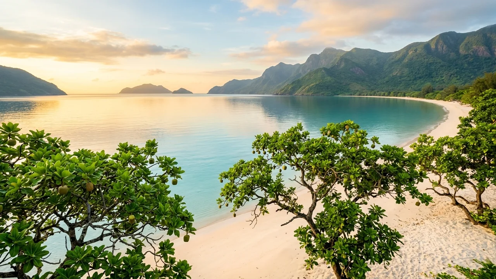
Tháng 1 - 3Mùa Xuân: Biển Êm Nắng Ấm & Hành Hương Tâm Linh
Thời điểm: Tháng 1 đến hết tháng 3 Dương lịchTiết trời dịu nhẹ, nắng vàng chan hòa và gió biển mát rượi. Đây là mùa cao điểm hành hương viếng mộ Cô Sáu, Chùa Núi Một và Miếu Bà Phi Yến để nguyện cầu quốc thái dân an, công việc thuận buồm xuôi gió.
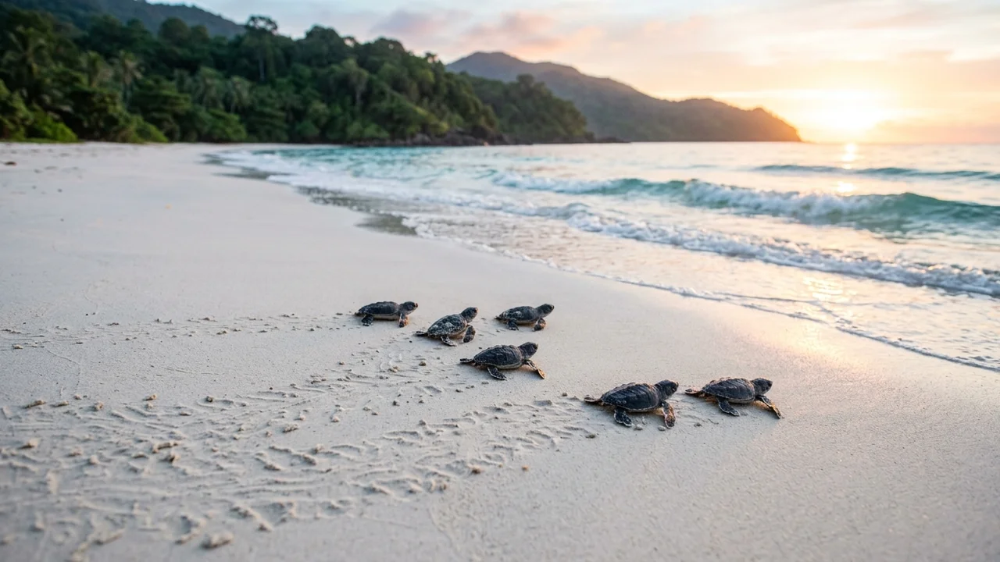
Tháng 4 - 8Mùa Hạ: Xem Rùa Đẻ Trứng & Lặn Ngắm San Hô
Thời điểm: Tháng 4 đến hết tháng 8 Dương lịchMùa biển lặng tuyệt đối, nước biển trong vắt nhìn thấy đáy ở độ sâu 10m. Thời điểm vàng để đi cano khám phá Hòn Bảy Cạnh, Hòn Cau, lặn ngắm rạn san hô nguyên sinh và tham gia hoạt động thả rùa con về đại dương.
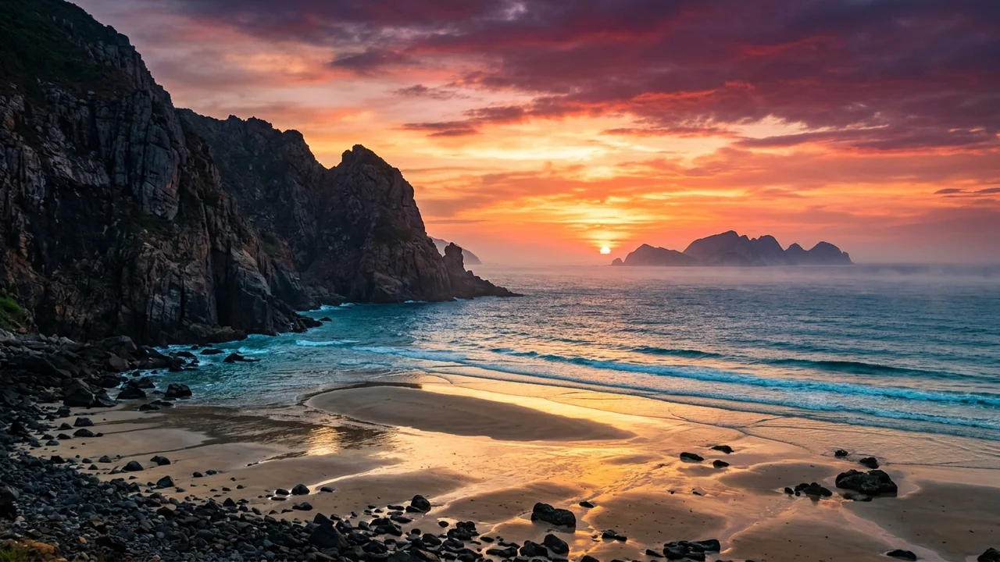
Tháng 9 - 10Mùa Thu: Hoàng Hôn Tím Biếc & Mùa Sim Rừng
Thời điểm: Tháng 9 đến hết tháng 10 Dương lịchMùa giao mùa bình yên, mật độ khách vừa phải. Những triền đồi ngập tràn hoa sim rừng tím nở rộ, hoàng hôn Bãi Nhát đẹp nhất trong năm, không gian tĩnh lặng thích hợp cho những ai tìm kiếm sự chữa lành và chiêm nghiệm cuộc sống.
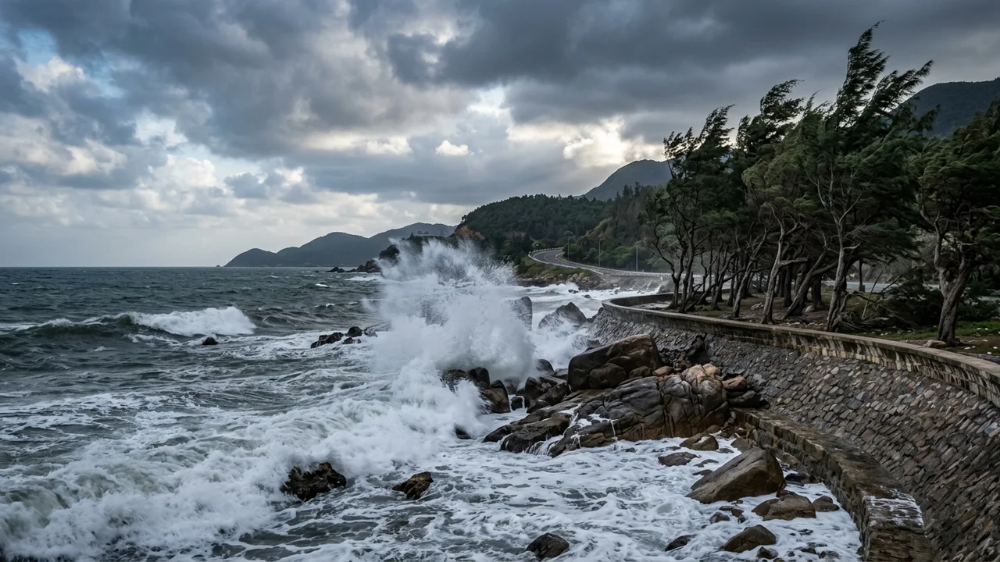
Tháng 11 - 12Mùa Đông: Gió Chướng Hùng Vĩ & Hồn Cốt Biển Đảo
Thời điểm: Tháng 11 đến hết tháng 12 Dương lịchMùa đông Côn Đảo se lạnh về đêm, gió chướng tạo nên vẻ đẹp hoang dại, hùng tráng. Bờ tây đảo như Bãi Đầm Trầu vẫn kín gió êm đềm, là thời điểm thưởng thức các món hải sản nóng hổi thơm nồng hương vị biển mặn.
🏞️ 5. Top 10 Thắng cảnh biểu tượng & Dấu tích lịch sử
Khám phá 10 địa danh biểu tượng định danh linh hồn lịch sử và vẻ đẹp thiên nhiên ngoạn mục của Côn Đảo:
1. Nghĩa Trang Hàng Dương — Cõi Thiêng Bất Tử Giữa Ngàn Dương Xanh
Nơi an nghỉ của gần 2.000 liệt sĩ kiên trung và các bậc tiền bối cách mạng Lê Hồng Phong, Nguyễn An Ninh dưới bóng dương ngàn năm.
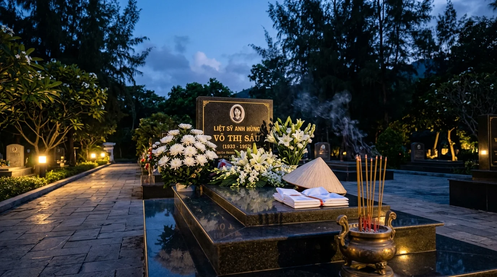
2. Mộ Nữ Anh Hùng Võ Thị Sáu — Cõi Thiêng Đất Đảo & Biểu Tượng Bất Tử
Phần mộ linh thiêng ngập tràn hoa cúc trắng tại Khu B2 Hàng Dương, nơi triệu trái tim người Việt hướng về với lòng thành kính tri ân sâu sắc.
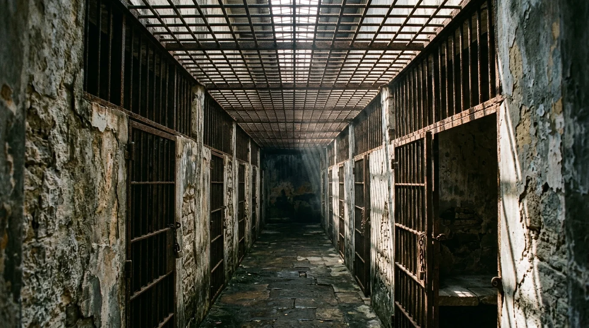
3. Hệ Thống Nhà Tù Côn Đảo & Chuồng Cọp
113 năm "địa ngục trần gian" hóa biểu tượng ý chí bất khuất kiên trung của dân tộc Việt Nam trước mọi gông xiềng quân thù.
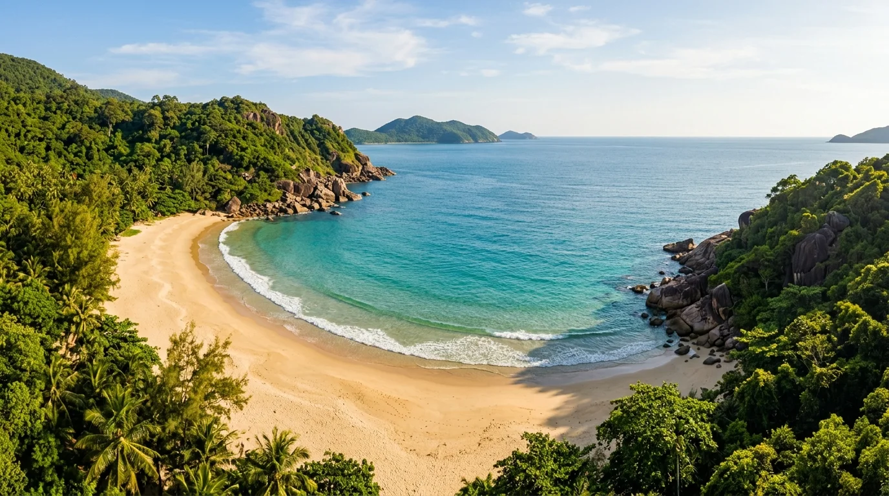
4. Bãi Đầm Trầu
Bãi biển cánh cung thơ mộng với trải nghiệm máy bay lướt sát đầu độc đáo duy nhất tại Việt Nam.
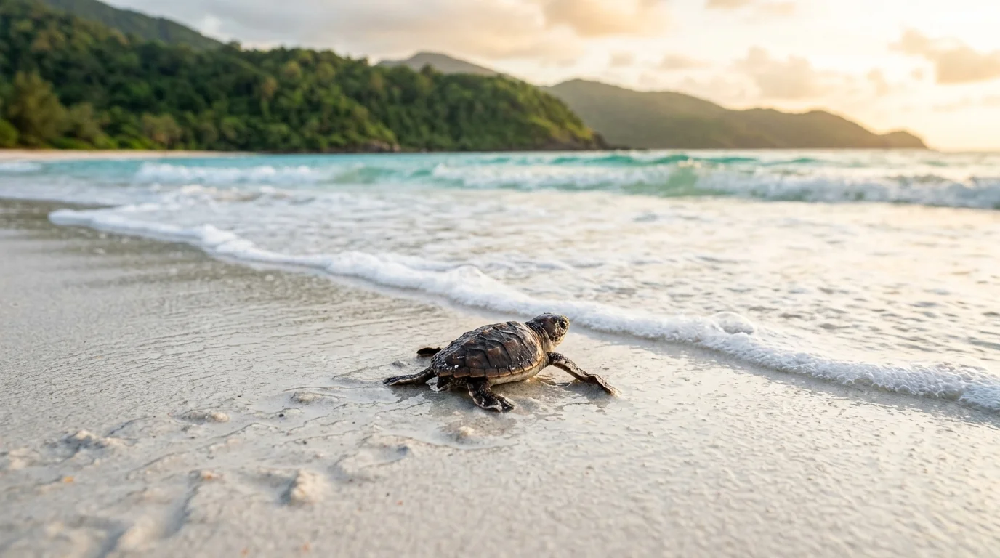
5. Hòn Bảy Cạnh & Rùa Biển
Thiên đường bảo tồn rùa biển lớn nhất Việt Nam với bãi cát hoang sơ và rạn san hô nguyên vẹn.
6. Cầu Tàu 914
Chứng tích lịch sử khắc sâu bằng máu và nước mắt của 914 tù nhân khổ sai thời kỳ thực dân.
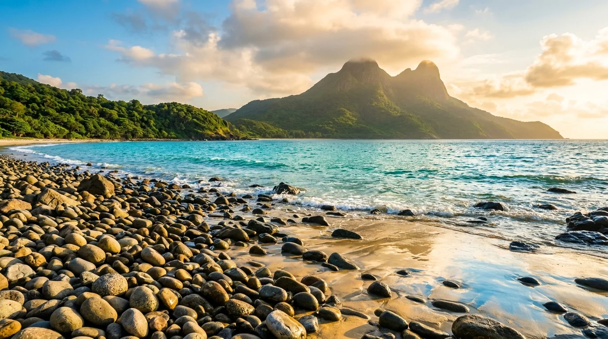
7. Bãi Nhát & Đỉnh Tình Yêu
Dải cát ngọc chỉ xuất hiện khi triều rút, nơi chiêm ngưỡng hoàng hôn dát vàng lãng mạn ngút ngàn.
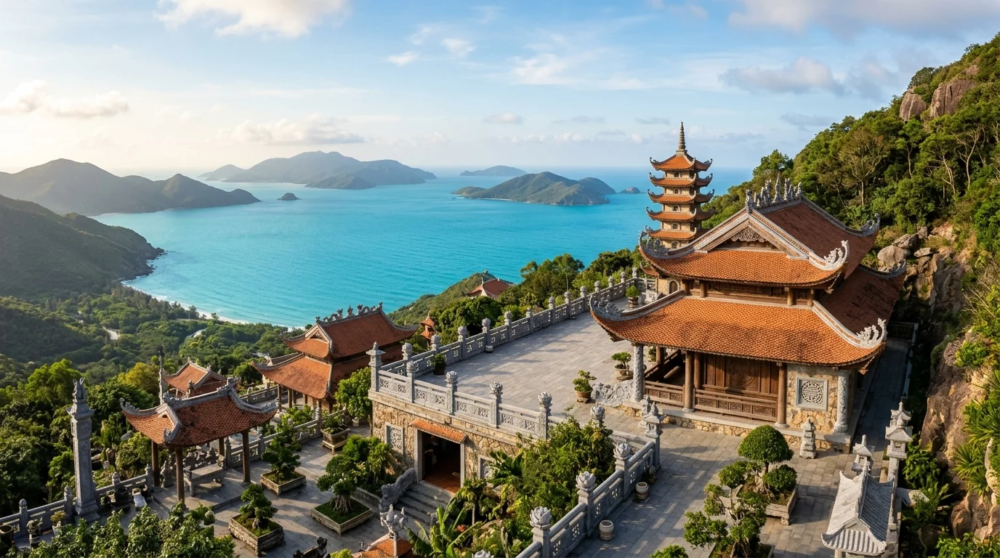
8. Chùa Núi Một (Vân Sơn Tự)
Danh lam cổ tự duy nhất trên đảo, nơi lắng nghe tiếng chuông chùa thanh tịnh ngắm trọn vịnh Côn Sơn.
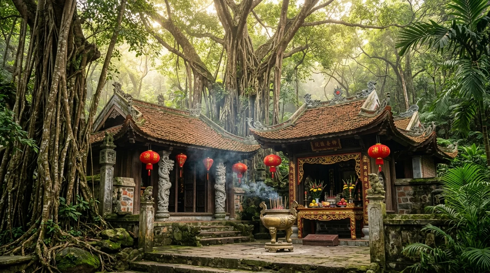
9. Miếu Bà Phi Yến (An Sơn Miếu)
Ngôi miếu thanh tịnh gắn liền số phận bi tráng của vị thứ phi kiên trinh tấm lòng vì dân vì nước.
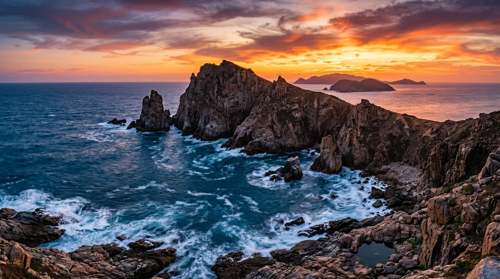
10. Mũi Chim Chim & Cung Đường Côn Sơn
Kiệt tác điêu khắc của sóng và đá granit, điểm dừng chân lý tưởng trên cung đường biển ngoạn mục.
✈️ 6. Cẩm nang di chuyển & Cung đường giao thông
Việc di chuyển ra Côn Đảo ngày nay đã vô cùng thuận tiện và đa dạng với các tuyến bay thương mại phản lực và đội tàu cao tốc hiện đại bậc nhất:
| Phương tiện | Tuyến đường / Điểm xuất phát | Thời gian | Giá vé tham khảo | Ưu điểm & Lưu ý |
|---|---|---|---|---|
| Máy bay (Vietnam Airlines / Vasco) | TP.HCM (SGN) / Cần Thơ (VCA) → Côn Đảo (VCS) | 45 – 55 phút | 1.600.000 – 2.400.000đ/lượt | Nhanh chóng, thuận tiện, bay hàng ngày bằng dòng máy bay phản lực cánh quạt ATR-72 hoặc Embraer 190. |
| Tàu cao tốc Côn Đảo Express (Vũng Tàu) | Cảng Cầu Đá (Vũng Tàu) → Cảng Bến Đầm (Côn Đảo) | 3.5 – 4 giờ | 660.000 – 1.200.000đ/lượt | Tàu hai thân hiện đại sức chứa 600 khách, ổn định chống say sóng tốt, chạy thẳng từ bờ biển Đông Nam Bộ. |
| Tàu cao tốc Superdong / Trưng Nhị (Sóc Trăng) | Cảng Trần Đề (Sóc Trăng) → Cảng Bến Đầm (Côn Đảo) | 2 – 2.5 giờ | 390.000 – 590.000đ/lượt | Cung đường biển ngắn nhất từ đất liền ra đảo (chỉ 83km), tiết kiệm chi phí và thời gian đi tàu trên biển. |
| Tàu cao tốc Mai Linh Express (Cần Thơ) | Bến Ninh Kiều (Cần Thơ) → Cảng Bến Đầm (Côn Đảo) | 3.5 – 4 giờ | 600.000 – 900.000đ/lượt | Tàu chạy dọc sông Hậu ra biển rồi qua Côn Đảo, kết hợp trải nghiệm ngắm sông nước miền Tây và biển cả. |
🛵 Phương Tiện Đi Lại Trên Đảo Côn Sơn
- Thuê xe máy: Giá 120.000 – 150.000đ/ngày. Đảo không có đèn đỏ, đường xá thênh thang rợp bóng cây bàng cổ thụ, chạy xe máy hóng gió biển là trải nghiệm tuyệt vời nhất.
- Xe điện du lịch: Hoạt động 24/7 đón trả tận nơi trong thị trấn, giá tính theo km hoặc chuyến (20.000đ/km), thích hợp cho gia đình hoặc nhóm bạn đi viếng mộ Cô Sáu ban đêm.
- Xe taxi & ô tô tự lái: Có các hãng taxi Côn Sơn, Mai Linh sẵn sàng phục vụ các tuyến xa như Bãi Đầm Trầu, Bến Đầm.
🐚 7. Tinh hoa ẩm thực đặc sản Côn Đảo
Ẩm thực Côn Đảo là sự giao hòa giữa hải sản đại dương sạch lành nước mặn và hương vị bùi béo của những loài cây trái trên đảo đá:
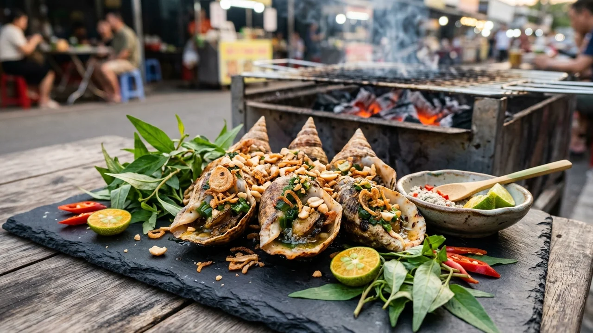
1. Ốc Vú Nàng Nướng Mỡ Hành
Đặc sản trứ danh biển đảo. Từng con ốc chóp nón nướng xèo xèo mỡ hành thơm nức, thịt giòn ngọt sần sật chấm muối tiêu chanh ớt tươi cay nồng.
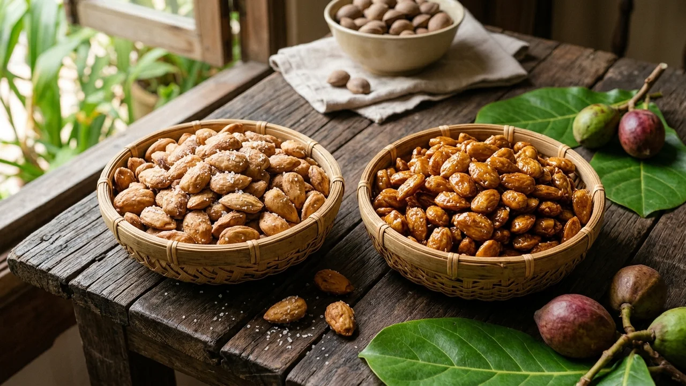
2. Mứt Hạt Bàng Rang Muối & Đường
Món quà biểu tượng của đất đảo anh hùng. Hạt bàng đập tay thủ công rang bùi ngậy, đậm đà vị mặn của biển hay vị ngọt thơm của gừng đường.
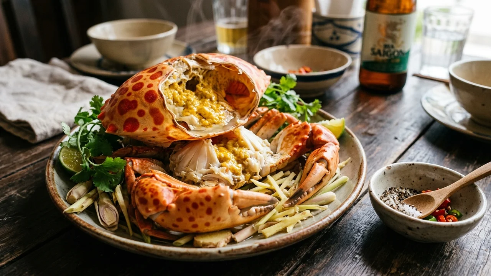
3. Cua Mặt Trăng Hấp Bia Gừng
Loài hải sản quý hiếm với các đốm đỏ như mặt trăng trên mai. Thịt cua ngọt đậm đà, chắc nịch quyện cùng gạch cua vàng béo ngậy khó cưỡng.
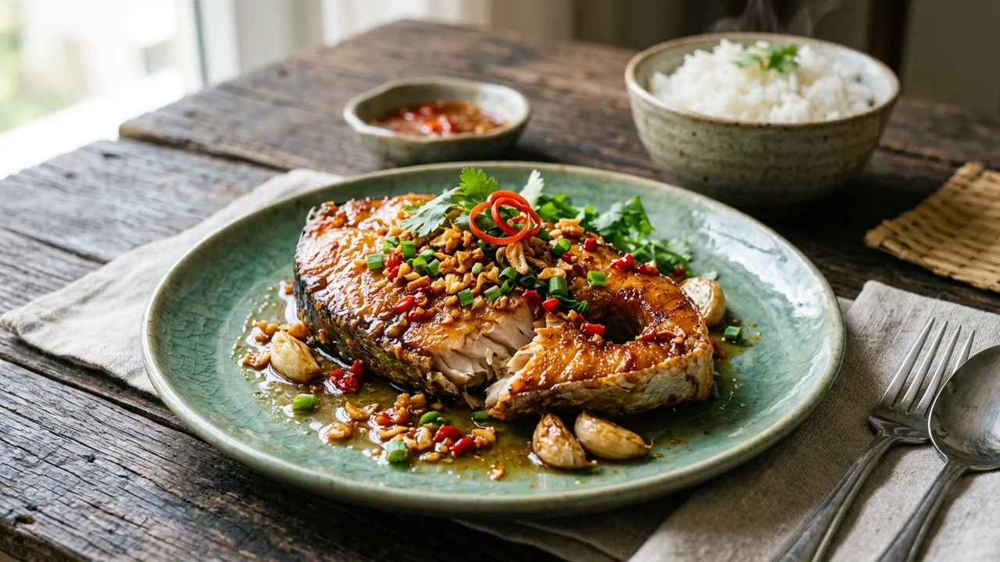
4. Cá Thu Một Nắng Sốt Tỏi Ớt
Cá thu đại dương phơi đúng một nắng hanh hao se mặt. Thịt cá ngọt đậm, dẻo bùi chiên giòn rụm óng ánh sốt nước mắm ớt thơm nồng ấm bụng.
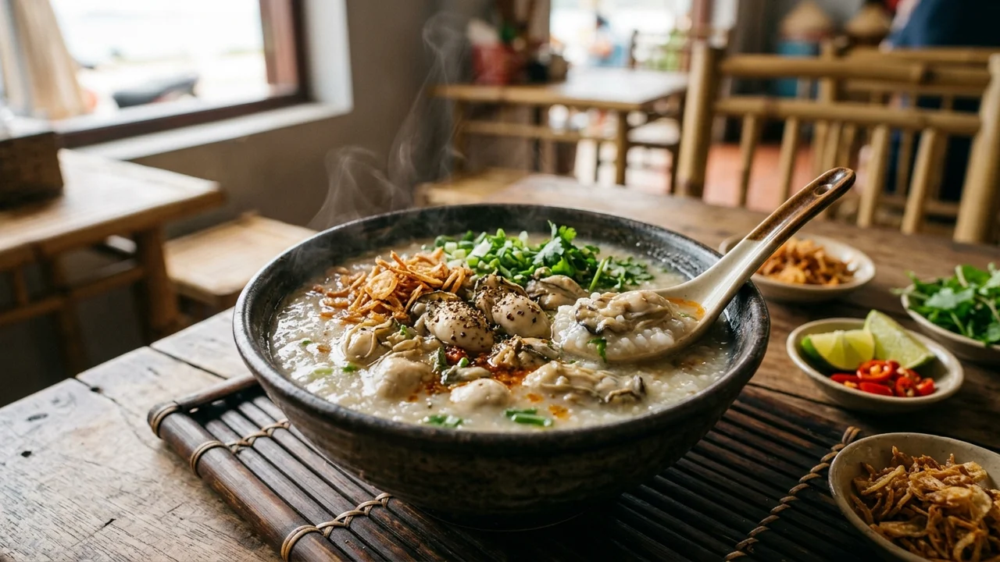
5. Cháo Hàu Sữa Côn Đảo
Món ăn đêm ấm áp làm say lòng du khách. Hàu sữa tự nhiên béo múp xào thơm nức trút vào bát cháo gạo tấm sánh mịn rắc tiêu hành phi thơm ngào ngạt.
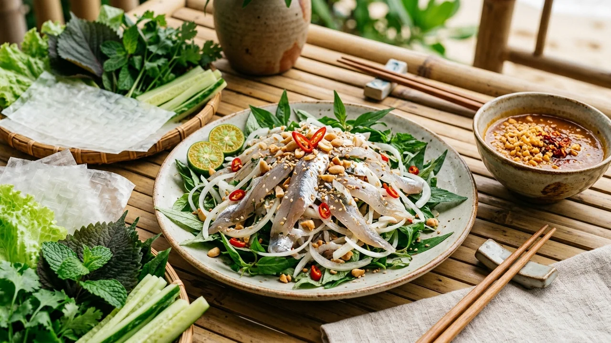
6. Gỏi Cá Mai Tươi Cuốn Bánh Tráng
Món gỏi biển thanh tao tinh tế. Cá mai trong suốt tươi rói bóp chanh tái ngọt lịm, cuốn bánh tráng rau rừng chấm nước chấm đậu phộng me chua ngọt đậm đà.
🎫 8. Bảng giá vé tham quan & Dịch vụ niêm yết
Bảng giá vé tham quan các di tích lịch sử và danh lam thắng cảnh tại Côn Đảo được niêm yết theo quy định của Trung tâm Bảo tồn Di tích Quốc gia Côn Đảo và Ban Quản lý Vườn Quốc gia:
| Khu vực tham quan / Dịch vụ | Cảnh điểm chi tiết | Giá vé niêm yết | Ghi chú & Chính sách ưu đãi |
|---|---|---|---|
| Vé trọn gói Di tích Lịch sử Côn Đảo | Bảo tàng Côn Đảo, Trại Phú Hải, Chuồng Cọp Pháp, Chuồng Cọp Mỹ, Dinh Chúa Đảo, Cầu Tàu 914 | 50.000đ/người | Vé có giá trị trong ngày, miễn phí thuyết minh viên đoàn khi đăng ký trước tại ban quản lý. |
| Nghĩa trang Hàng Dương & Mộ Cô Sáu | Thắp hương viếng đài tưởng niệm và các phần mộ liệt sĩ | Miễn phí hoàn toàn | Mở cửa đón khách cả ban ngày và ban đêm (thường viếng từ 20:00 đến 23:30). Trang phục nghiêm trang. |
| Vé tham quan Vườn Quốc gia Côn Đảo | Trekking rừng Ông Đụng, Bãi Bàng, Rừng nguyên sinh Côn Sơn | 60.000đ/người | Học sinh, sinh viên giảm 50% (30.000đ/vé). Tuân thủ quy định phòng cháy rừng và không xả rác. |
| Tour cano Hòn Bảy Cạnh xem rùa đẻ trứng | Cano khứ hồi, kiểm lâm hướng dẫn xem rùa đẻ trứng ban đêm hoặc thả rùa con sáng sớm | 1.200.000 – 1.800.000đ/khách | Giới hạn số lượng khách mỗi đêm theo quy định bảo tồn của Ban Quản lý Vườn Quốc gia. Cần đặt trước. |
| Tour cano lặn ngắm san hô (Hòn Cau - Hòn Tài) | Cano khứ hồi, kính lặn, ống thở, áo phao lặn ngắm san hô tự nhiên | 650.000 – 850.000đ/khách | Nửa ngày (sáng hoặc chiều), xuất bến từ Cảng Bến Đầm hoặc Vịnh Côn Sơn tùy tình hình sóng gió. |
📌 Lưu ý: Người có công với cách mạng, người khuyết tật nặng và trẻ em dưới 6 tuổi được miễn vé tham quan di tích lịch sử. Người cao tuổi từ đủ 60 tuổi trở lên (công dân Việt Nam) được giảm 50% giá vé khi xuất trình căn cước công dân gốc. Giá vé cano tham quan đảo nhỏ và dịch vụ sinh thái có thể điều chỉnh nhẹ tùy theo điều kiện thời tiết biển hoặc từng thời điểm trong năm.
🗺️ 9. Gợi ý lịch trình 3N2Đ & Mẹo viếng tôn nghiêm
🙏 Gợi Ý Lịch Trình 3 Ngày 2 Đêm (3N2Đ) Trọn Vẹn Tâm Linh & Sinh Thái
- Ngày 1: Đến Côn Đảo → Khám phá Hệ thống Nhà tù → Hoàng hôn Bãi Nhát → Viếng Nghĩa trang Hàng Dương ban đêm
• Sáng: Hạ cánh sân bay Cỏ Ống hoặc cập cảng Bến Đầm. Check-in khách sạn thị trấn Côn Sơn, ăn trưa với bánh canh hàu sữa.
• Chiều: Tham quan Bảo tàng Côn Đảo, Trại Phú Hải, Chuồng Cọp Pháp, Chuồng Cọp Mỹ. Chiều tà chạy xe máy qua Bãi Nhát ngắm hoàng hôn buông xuống Đỉnh Tình Yêu.
• Tối: Ăn tối hải sản ốc vú nàng. Chuẩn bị lễ vật chu đáo (hoa cúc trắng, gương lược, trái cây), từ 21:00 đến viếng Nghĩa trang Hàng Dương và dâng hương tại Mộ Cô Sáu. - Ngày 2: Chùa Núi Một → Cano Hòn Bảy Cạnh lặn ngắm san hô → Bãi Đầm Trầu ngắm máy bay
• Sáng: Viếng Chùa Núi Một (Vân Sơn Tự), ngắm trọn hồ sen An Hải. Lên cano ra Hòn Bảy Cạnh lặn ngắm san hô và tìm hiểu trạm bảo tồn rùa biển.
• Chiều: Về lại đảo lớn nghỉ ngơi, chiều lái xe qua cung đường Cỏ Ống đến Bãi Đầm Trầu tắm biển và chụp ảnh máy bay hạ cánh sát đầu.
• Tối: Thưởng thức cua mặt trăng hấp bia gừng, dạo phố biển Côn Sơn yên bình rợp bóng cây bàng cổ thụ. - Ngày 3: Miếu Bà Phi Yến → Chợ Côn Đảo mua mứt hạt bàng → Tạm biệt đất đảo thiêng
• Sáng: Dậy sớm ngắm bình minh trên Cầu tàu 914, viếng Miếu Bà Phi Yến (An Sơn Miếu). Ghé Chợ Côn Đảo mua mứt hạt bàng rang muối, cá thu một nắng làm quà.
• Trưa: Trả phòng khách sạn, di chuyển ra sân bay Cỏ Ống hoặc cảng Bến Đầm khép lại hành trình đầy xúc động và thiêng liêng.
💡 Những Quy Tắc Tôn Nghiêm & Bảo Vệ Thiên Nhiên Bắt Buộc Tại Côn Đảo
- Trang phục khi viếng di tích & nghĩa trang: Bắt buộc mặc trang phục kín đáo, lịch sự (quần dài hoặc váy qua gối, áo có tay). Tuyệt đối không mặc đồ hở hang, phản cảm tại Nghĩa trang Hàng Dương và các khu trại giam.
- Giữ trật tự tôn nghiêm: Không đùa cợt, nói to, cười đùa hoặc bật nhạc ồn ào khi vào khu vực các nghĩa trang và đài tưởng niệm.
- Bảo tồn rùa biển & san hô: Khi tham gia tour xem rùa đẻ trứng, tuyệt đối không dùng đèn flash máy ảnh, không chiếu đèn pin vào mắt rùa mẹ, không chạm vào rùa. Khi lặn biển không dẫm đạp, bẻ gãy hay nhặt san hô mang về đất liền.
- Bảo vệ môi trường đảo: Côn Đảo đang nỗ lực trở thành hòn đảo giảm thiểu rác thải nhựa. Hạn chế tối đa sử dụng túi nilon và ly nhựa một lần; hãy mang theo bình nước cá nhân khi đi dã ngoại.